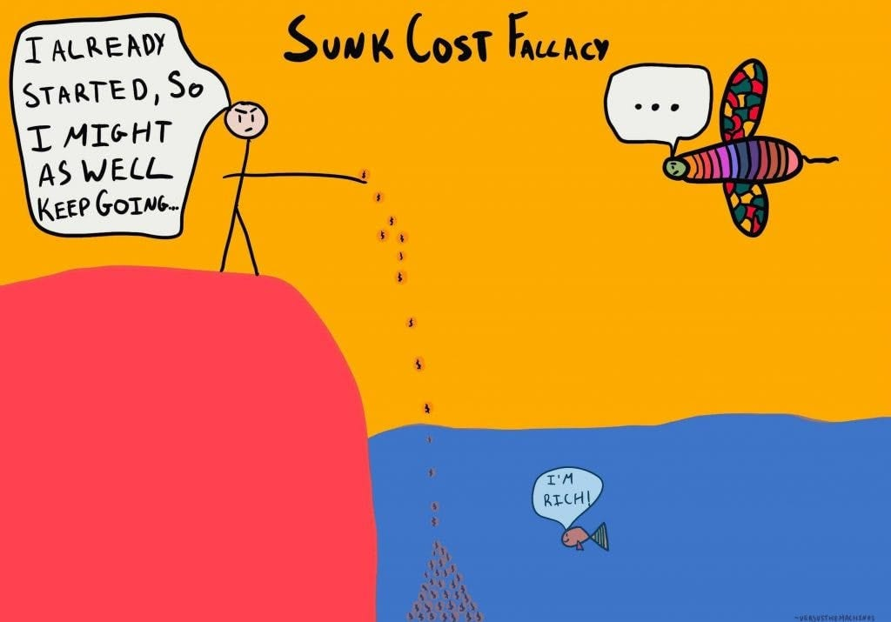

I played a sport for 10 years of my life, and I never felt good in any of those years. Throughout all my time playing, I watched people join years after me and improve greatly, even surpassing me. I never once was able to understand why it felt like I was always falling behind; everyone was better than me. That sport began to feel like a target that I was never able to hit.
Everyone starts a sport because they want to have fun; however, while everyone else got better and was having fun doing so, the fun began to slip away for me, and I felt like my skill plateaued. Getting dropped off at practice felt overwhelming. I had this pit in my stomach nonstop. It got to a point where I couldn't play at all. Every time I went onto the field, I would freeze up and would immediately be taken off.
Finally, at 15 years old—ten years after I started playing—I decided it was time to stop. I began to play other sports and joined clubs in my free time. I branched out and made more friends, more connections, and overall, I enjoyed life more. Realizing it was time to quit was one of the best things that ever happened to me, and I am grateful that I was able to do so.
Quitting can be very hard after you have invested a lot of time. The sunk cost fallacy is a common phenomenon where individuals feel pushed to stick with something because they have invested so much time in it, rather than because it still brings them value or happiness.
For me, stepping away created room to discover activities I genuinely enjoyed. A choice like that can look different for every person, and talking with a trusted adult, coach, or counselor can help when the decision feels difficult. Looking back, what mattered most was finding a healthier relationship with how I spent my time and what brought me joy.
Support
Resources & Support
If this story resonated with you, the following resources may help support athletes and students navigating burnout, performance anxiety, identity struggles, pressure, and mental health challenges.
Broad Shoulders Initiative is not a crisis service, medical provider, or therapy provider. If support feels urgent, please contact emergency services, a trusted adult, a school counselor, or a licensed professional.